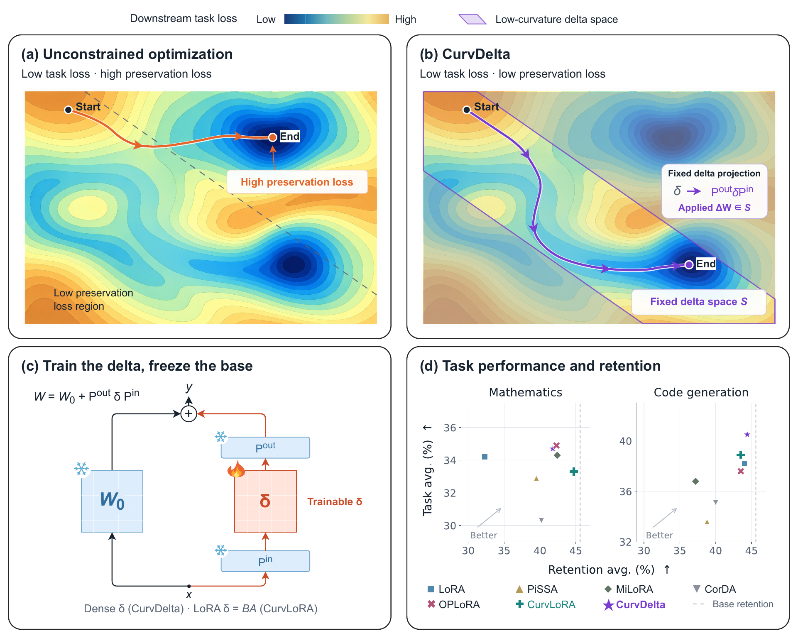

01 / Abstract
Preserve capability by design.
A central challenge in adapting large language models (LLMs) is capability preservation: an adaptation can achieve its target while degrading general capabilities. We introduce CurvDelta, a scalable framework that incorporates the preservation constraint into the parameterization of the model update. By analyzing the local geometry of the preservation constraint around the pre-adaptation model, CurvDelta constructs a low-curvature space in which parameter updates leave the preservation loss nearly invariant. We make its construction practical for LLMs through Kronecker-factored approximate curvature (K-FAC) and a factorized projection. We also introduce CurvLoRA, a low-rank variant within the same preservation geometry, designed for more efficient adaptation. Both methods apply to preservation-constrained adaptation tasks such as capability learning and selective unlearning. We evaluate our methods on mathematical reasoning, code generation, and knowledge unlearning. For mathematical reasoning and code generation, our approaches achieve competitive downstream performance while better preserving general capabilities, offering a favorable acquisition--retention trade-off relative to the baselines. For knowledge unlearning, our main results on TOFU and MUSE show a better balance between targeted forgetting and knowledge retention than the baselines, with retention performance close to the from-scratch retraining reference.
02 / Overview
One geometry, two adaptation regimes.

03 / Code